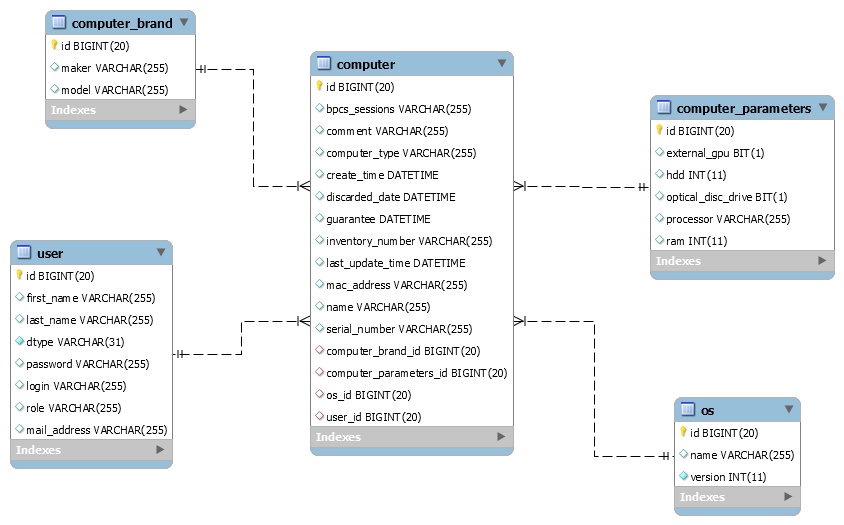

Počítačová databáze - projekt DORDB
1. E-R diagram

2. Slovní popis dodatečných integritních omezení
2.1. Triviální integritiní omezení
- Tabulka COMPUTER
- Atribut computer_name musí být unikátní (v továrně se nesmění nacházet dva počítače se stejným
jménem).
- Atribut mac_address musí být unikátní.
- Atribut inventory_number musí být unikátní.
- Atribut discarded_time musí být větší jak atribut create_time (počítač nemůže být
vyřazen dřive než byl vytvořen).
- Atribut last_update_time musí být větší jak atribut create_time (počítač nemůže
být editován dřive než byl vytvořen).
- Atribut guarantees musí být větší jak atribut create_time.
- Atribut mac_address nesmí být null.
- Atribut computer_name nesmí být null.
- Tabulka USER
- Atribut user_login musí být unikátní.
- Atribut user_email_address musí být unikátní.
- Atribut user_email_address musí obsahovat posobě jdoucí znaky "@" a ".". Dále nesmí začínat ani
na znak "@" ani obsahovat dva tyto znaky v jedné adrese.
- Atribut user_first_name nesmí být null.
- Atribut user_last_name nesmí být null.
- Atribut user_login nesmí být null.
- Atribut user_password nesmí být null.
- Tabulka COMPUTER_PARAMETERS
- Atribut hdd musí být větší jak 0.
- Atribut ram musí být větší jak 0.
- Atribut extername_GPU nesmí být null.
- Atribut optical_disk_drive nesmí být null.
- Atribut processor nesmí být null.
- Tabulka OS
- Atribut os_version musí být větší jak 0.
- Atribut os_name nesmí být null.
2.1. Netriviální integritní omezení
TODO!
3. Slovní návrh API rozhraní „business logiky“
TODO!
/*DUMMY*/Zaregistrování zakazníka
Název: registrace_zakaznika
Parametry: email, heslo, jmeno, login, prijmeni,rodne_cislo,telefon
Popis: Pocedura vytvoří nový záznam v tabulce Zákazník. Zákazníka sváže s adresou v databázi.
4. Pět slovně formulovaných dotazů nad schématem
- vypsat jména uživatelů, jejichž počítače mají OS macOS.
- 10 naposledy upravených počítačů.
- seznam ( jméno, příjmení, role, e-mail, název počítače ) všech uživatelů kteří používají daný počítač
(computer_id).
- vypsat všechny parametry počítače, jeho název, jméno uživatele, název OS, název výrobce a modelu, který je
stále v záruce 2 let.
- Vypsani všech uživatelů a seřazení podle počtu počítačů.
5. Skript, který vytvoří databázové schéma odpovídající E-R diagramu
Skript: 05_db_schema.sql
6. Skript, který vytvoří v databázovém schématu dodatečná integritní omezení
Skript: 06_integritni_omezeni_z_bodu_2.sql
7. Skript, který naplní tabulky testovacími daty
Skript: 07_testovaci_data.sql
8. Skript, který provede postupně všechny navržené dotazy z bodu 4
Skript: 08_dotazy_z_bodu_4.sql
Výsledky: 08_vysledky_dotazu.txt
Porovnání: 08_porovnani.txt
9. Skript, který se pokusí porušit všechna dodatečná integritní omezení
Skript: 09_poruseni_omezeni.txt
Výstup: 09_vystup.txt
10. Skript pro vytvoření balíku (package) a procedur „business logiky“
Skript: 10_balik_a_procedury
11. Ověření procedur „business logiky“
Skript: 11_testovaci_skript_procedur.txt
Výstupy: 11_vystup.txt
12. Skript, který doplní do tabulky automaticky dopočítávaný sloupec
Skript: 12_odvozene_hodnoty.txt
13. Skript, který vytvoří úložiště ještě jednou v „objektové“ podobě
Skript: 13_objektova_podoba.txt
14. Skript, který provede pět dotazů znovu, nad objektovými tabulkami
Skript: 14_objektove_dotazy_z_bodu_4.txt
Výstup: 14_vystup.txt
15. Navrhněte slovně fakta a dimenze pro datový sklad
Skript pro vyčištění databáze
Skript: drop.txt
{kind=link}